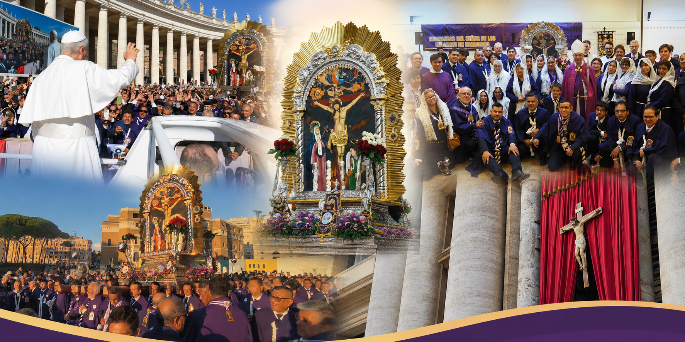
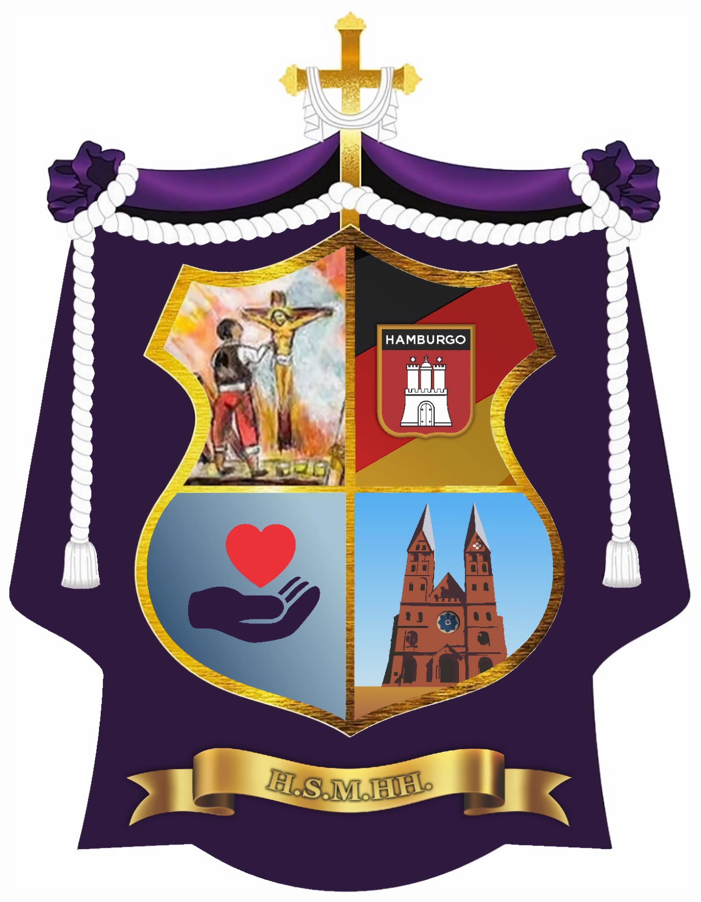

Próximos Eventos
Muy pronto publicaremos aquí nuestras próximas misas, procesiones y actividades comunitarias.


Bienvenidos a la página oficial de la Hermandad del Señor de los Milagros en Hamburgo, una comunidad unida por la fe, la devoción y el amor a Cristo.
Muy pronto publicaremos aquí nuestras próximas misas, procesiones y actividades comunitarias.
Este espacio estará destinado para comunicados importantes de la Hermandad.
Conoce la historia, oraciones y tradición del Señor de los Milagros.
Leer más